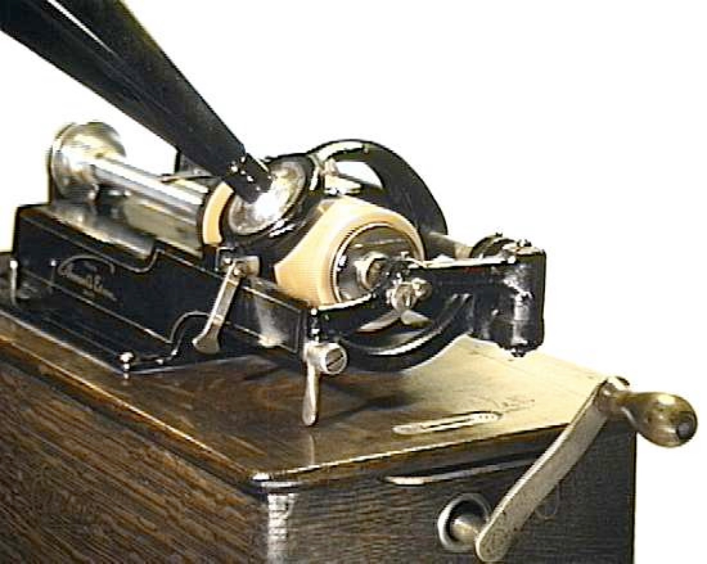
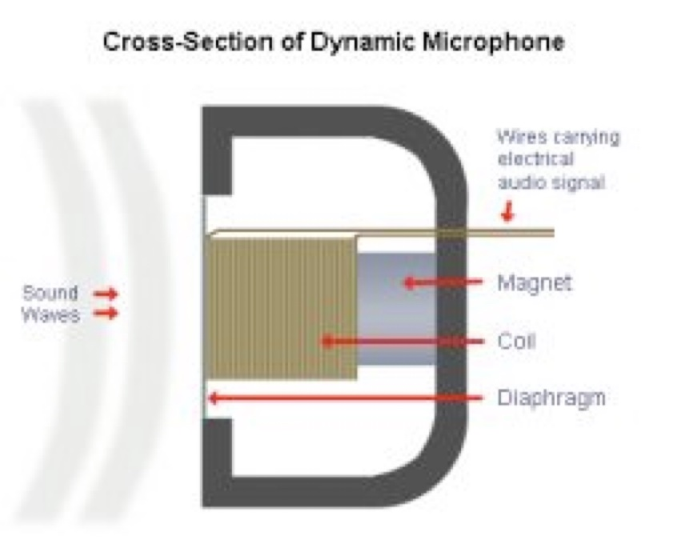
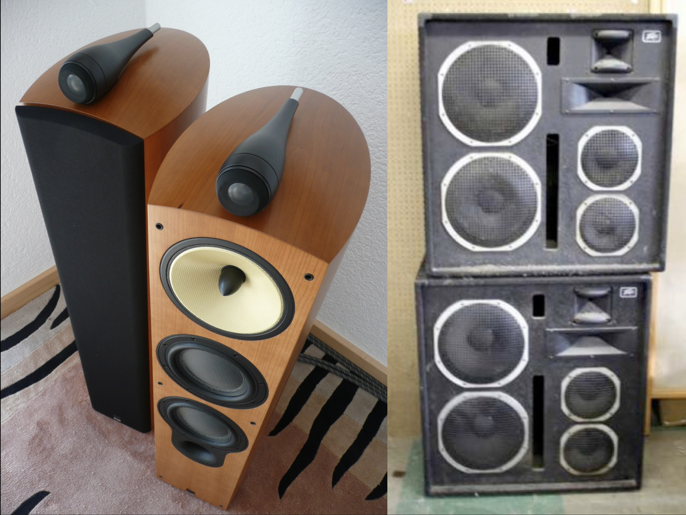

### If I've not heard from you by Friday, you're taking the test in 50 minutes, in this classroom - Last minute accommodations requests won't be able to be accommodated! <audio controls src="phonmedia/edison_lostchord.mov"></audio> --- # Capturing and Storing Sound ### Will Styler - LIGN 113 --- ### Today's Plan - Capturing Pressure variations - Computer Audio, Sampling, and Quantization - Audio Compression - Noise Reduction --- ### Sound is compression and rarefaction in a medium <img class="r-stretch" src="phonmedia/sound_diagram.jpg"> --- ### Timeshifted sound is a novelty - For most of our species history, this wasn't a thing - *How do we capture and recreate the pattern of sound pressure?* --- ### Analog Recording - "Let's capture the pressure pattern in a physical medium" --- ### The Phonograph - Air pressure pushes a stylus into very soft wax cylinder <img class="r-stretch" src="phonmedia/phonograph.jpg"> --- ### Playback from Phonographs - Put a stylus on a membrane into the groove, and let it 'trace the wave'  --- ### These recordings are ephemeral and bad - The stylus wears away the groove - The power of the air pressure limited the strength of the medium 'The Lost Chord' by Arthur Sullivan (1888) <audio controls src="phonmedia/edison_lostchord.mov"></audio> --- ### There's an inherent tradeoff - You want a soft medium for capture - ... and a hard medium for playback - Air pressure only provides so much power --- <img class="r-stretch" src="phonmedia/conerecording.jpg"> --- ### Electric Recording fixes this! - Electrical signals are easy to amplify - ... and easier to store --- ### Microphones - A Microphone *transduces air pressure patterns into electrical patterns* - 'Give me a pattern of voltage that matches the pattern of compression and rarefaction' <img class="r-stretch" src="phonmedia/sound_diagram.jpg"> --- ### Dynamic Microphones - Air pressure pushes a membrane, moving a coil of wire around a magnet, inducing voltage - Durable, but less sensitive  --- ### There are many other kinds of microphones! - We can nerd out about this in office hours! --- ### Now you have sound as a voltage on an electrical line - You can amplify it, transmit it, modify it and store it - You can even recreate the air pressure movements --- ### Speakers - Dynamic microphones in reverse - Changes in voltage move a membrane attached to a coil - This 'kicks' the air in the desired pattern of compression <img class="r-stretch" src="phonmedia/speaker.jpg"> --- ### There are many types of speakers, some are different!  --- ## Any Questions so far? --- ### So, that's how we capture sound - ... and that's how we worked with sound for a good while! --- ### There are other *analog* ways to store sound - Magnetic field strength on tapes - [Optical Audio Storage on Film](https://www.youtube.com/watch?v=tg--L9TKL0I) - ... and more! --- ### But then everything changed <img class="r-stretch" src="img/appleii.jpg"> --- ## Computer Audio --- ### Computers don't do waves  010001110010101000100101101010101010 --- ### Sound is analog, computers are digital - How do we deal with that? --- ### Quantization - Also known as 'digitization', 'discretization', or 'sampling' - "Let's just measure the sound a LOT and store those values" --- ### Quantization <img class="r-stretch" src="diagrams/sampling_perfectwave.png"> --- ### Quantization <img class="r-stretch" src="diagrams/sampling_sampled.png"> --- ### Quantization <img class="r-stretch" src="diagrams/sampling_withlines.png"> --- ### Quantization <img class="r-stretch" src="diagrams/sampling_justlines.png"> --- ### Analog-to-digital conversion - Sample the wave many times per second - Record the amplitude at each sample - The resulting wave will faithfully capture the signal --- ### How often do we sample? - This is called the 'Sampling Rate' - Measured in samples per second (Hz) --- ### Sampling Rate <img class="r-stretch" src="diagrams/sampling_sampled.png"> --- ### Sampling Rate (low rate) <img class="r-stretch" src="diagrams/sampling_lowrate.png"> --- ### Sampling Rate (low rate) <img class="r-stretch" src="diagrams/sampling_lowratejustlines.png"> --- ### Sampling Rate (lower rate) <img class="r-stretch" src="diagrams/sampling_verylow.png"> --- ### Sampling Rate (lower rate) <img class="r-stretch" src="diagrams/sampling_verylow2.png"> --- ### Use the right sampling rate <img class="r-stretch" src="diagrams/sampling_sampled.png"> --- ### Bad sampling makes for bad waves <img class="wide" src="phonmedia/sampling_undersampled.jpg"> --- ## Nyquist Theorem The highest frequency captured by a sample signal is one half the sampling rate --- ### Sampling Rates (Shpongle - 'Nothing is something worth doing') 44,100 Hz <audio controls src="phonmedia/nothingsomething44100.wav"></audio> 22,050 Hz <audio controls src="phonmedia/nothingsomething22050.wav"></audio> 11,025 Hz <audio controls src="phonmedia/nothingsomething11025.wav"></audio> 6000 Hz <audio controls src="phonmedia/nothingsomething6000.wav"></audio> --- ### Sampling Rates (Shpongle - 'Nothing is something worth doing') 44,100 Hz <audio controls src="phonmedia/nothingsomething44100.wav"></audio> 6000 Hz <audio controls src="phonmedia/nothingsomething6000.wav"></audio> 3000 Hz <audio controls src="phonmedia/nothingsomething3000.wav"></audio> 1500 Hz <audio controls src="phonmedia/nothingsomething1500.wav"></audio> 800 Hz <audio controls src="phonmedia/nothingsomething800.wav"></audio> --- ### Different media use different sampling rates - Radio was historically less than this - CDs are at 44,100 Hz - DVDs are at 48,000 Hz - High-End Audio DVDs are at 96,000 Hz - Some people want 192,000 Hz - Likely they are dolphins --- ### This all means that 'vinyl captures more detail' people are provably wrong - Any audible audio signal can be captured digitally, c.f. the nyquist theorem - We can capture greater bit depth than we can hear - 'More detail' means 'the noise and distortion I appreciate' - **Audiophiles are generally slightly insane** --- ### Capturing the samples into a file gives you uncompressed sound files! - WAV files are effectively large lists of amplitudes, with a sampling rate and channel info at the top - This is what programs like Praat or Audacity capture - There are ways to compress *losslessly*, by cleverly saving exactly the same amount of data - But this has limited effectiveness, as you're still stuck with all the data --- ### ... but what if you need your sound to take up less space - You're trying to store a bunch of sounds in a limited space - You're trying to save bandwidth costs when sending sound or music - You need to allow people with slow internet to talk synchronously by voice - You want to *encrypt* the signal so that others can't hear it without a key - **You want to send something smaller than large lists of samples!** --- ## Lossy Audio Compression --- ### Lossy Compression - Lossy compression asks "What can I throw away to make the file smaller while keeping the human from noticing?" - Lossy compression *is tuned to human perception*! - This contrasts with *lossless* compression, which keeps all the data - We use 'codec' to refer to methods for encoding/decoding (**code-dec**ode) audio --- ### Lossy codecs are everywhere - mp3 is the most well known lossy codec - AAC/M4A is Apple's version - Your cell phone uses EVS, EVRC, AMR, or GSM - This one of the reasons old phones need to be changed - It's also why hold music sounds like garbage --- ### Lossy codecs are everywhere - Bluetooth has its own compression codecs - Zoom uses the Opus codec - Free and open format, hooray! --- ### Lossy Compression throws away information strategically - Using things like Discrete Cosine Transform and LPC - Also uses psychoacoustic knowledge - "The human won't be able to hear this part anyways" - More on this in a few weeks! - "Let's throw away or simplify the stuff that doesn't matter as much to the human!" --- ### It's a lot like image compression! --- <img class="r-stretch" src="phonmedia/compression1.jpg"> --- <img class="r-stretch" src="phonmedia/compression2.jpg"> --- <img class="r-stretch" src="phonmedia/compression3.jpg"> --- <img class="r-stretch" src="phonmedia/compression4.jpg"> --- <img class="r-stretch" src="phonmedia/compression5.jpg"> --- <img class="r-stretch" src="phonmedia/compression6.jpg"> --- <img class="r-stretch" src="phonmedia/compression7.jpg"> --- ### Here's what it looks like when you make it lossless again --- <img class="r-stretch" src="phonmedia/compression7.jpg"> --- ### You can choose how much to compress the sounds! - The *Bitrate* dictates how many bits are required to capture a second of audio - The unit is 'kbps', Kilobits per second - 'Variable Bitrate' (VBR) is the same idea, but adapts well to varied complexity - Lower bitrate means more compression, but more data loss - This is independent of bit depth - Bit depth is the precision of the measurement you store for each sample --- ### Sound Compression (Again, Shpongle 'Nothing is something worth doing') Uncompressed WAV <audio controls src="phonmedia/nothingsomething.wav"></audio> 320kbps mp3 <audio controls src="phonmedia/nothingsomething320kbps.mp3"></audio> 192kbps mp3 <audio controls src="phonmedia/nothingsomething192kbps.mp3"></audio> 128kbps mp3 <audio controls src="phonmedia/nothingsomething128kbps.mp3"></audio> --- ### Sound Compression (Again, Shpongle 'Nothing is something worth doing') Uncompressed WAV <audio controls src="phonmedia/nothingsomething.wav"></audio> 64kbps mp3 <audio controls src="phonmedia/nothingsomething64kbps.mp3"></audio> 48kbps mp3 <audio controls src="phonmedia/nothingsomething48kbps.mp3"></audio> 32kbps mp3 <audio controls src="phonmedia/nothingsomething32kbps.mp3"></audio> 8kbps mp3 <audio controls src="phonmedia/nothingsomething8kbps.mp3"></audio> --- ### Lossy compression makes decisions! - Lossy compression throws away data irreversibly using a specified algorithm - These codecs were tuned for a data type and language - [mp3 was developed for Suzanne Vega's "Tom's Diner"](https://observer.com/2008/09/suzanne-vega-is-the-mother-of-the-mp3/) - Opus is meant for speech and makes decisions based on contributors' languages - **Saving or collecting your data with lossy compression changes it irrecoverably!** --- ## 'Noise Reduction' --- ### The World is Noisy - Non-speech noise - Room echo and feedback - Typing and mouse clicks - Background clatter - **Hearing aids want to send the voice, not the noise!** --- ### Filtering - Notch filtering out specific areas or whines - Detecting constant noise and subtracting it - Using multiple mics to remove non-target speech - Using phase cancellation to remove external noise --- ### Noise Reduction Algorithms - Discord, Zoom, Skype, and phones use speech tuned 'noise reduction' methods - These are increasingly neural-network-based filters - 'Noise Reduction' algorithms are usually trained on language data - They can adversely affect classes of phones found in languages outside of the training data - "That sound isn't found in the language I learned about, so it's noise!" --- ### Why do we give a damn in LIGN 113?!? - Speakers and Microphones are an important part of audio-focused disciplines - All hearing technology is based on quantized data these days - Compression is found in most of the digital audio we hear - Filtering and noise reduction are important steps in CIs and Hearing Aids - It's really, really cool --- <huge>Thank you!</huge>